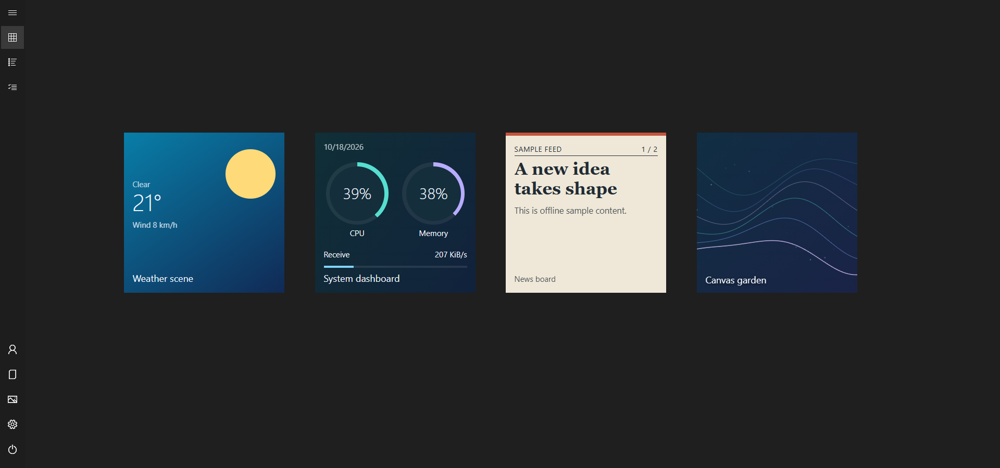

Live tiles guide
How to Bring Live Tiles Back to Windows 11
A shortcut opens an app. A live tile can tell you something before you open it. ReStart brings that idea to a full-screen launcher, with editable web tiles and a built-in creation workspace.
Windows 11’s native Start menu does not provide Windows 10 Live Tiles. ReStart offers an alternative: live tiles inside its own full-screen launcher, including ready-to-use examples and custom HTML/CSS/JavaScript packages. It does not re-enable the old Microsoft tile notification system.
What happened to Live Tiles?
In Windows 8 and Windows 10, some pinned app tiles could display changing information rather than just an icon: a date, photo or app update, for example. The Windows 10 Start screen combined those tiles with ordinary app shortcuts.
Microsoft’s Windows 11 specifications list Live Tiles as removed and point to Widgets for glanceable information. Widgets are a separate Windows experience. ReStart instead places its own dynamic tiles alongside your pinned apps, using a different implementation.
An optional compatibility reader can also display active tile and badge data that Windows still retains for pinned packaged apps. It is off by default and uses a read-only adapter for Windows’ undocumented notification store. Common size bindings, local images and data placeholders are supported; missing or unsupported data falls back to the app icon. It does not reconnect retired feeds or restart another app’s background delivery. For a clock, PC dashboard, weather tile or custom web view with data you choose, use ReStart’s own web tile system. See the compatibility settings and limits.
Add your first live tile
- Set up the complete portable package. Follow the download and setup steps. Keep the supporting folders with
ReStart.exe. HTML rendering and Tile Studio previews require Microsoft WebView2 Runtime, which is maintained separately from the .NET runtime included in the ZIP. - Open the gallery. Right-click the background or a group and choose Add live tile. You can also browse packages in Settings → JavaScript tiles. Choose an offline example such as Orbit clock or Month dots to start without configuring a service.
- Pick a size and try the interaction. Right-click the installed tile to resize it. Some examples respond to a normal click: the focus timer pauses or resumes, and other tiles switch their displayed detail. A normal click operates the tile rather than opening its JavaScript in a text editor.
- Configure connected samples deliberately. Weather, feeds and API tiles need a chosen, enabled connection. They do not start fetching a provider until you save that connection. Use the tile’s context menu to configure its data or selected photo folder.


Choose an included sample
The current package includes nineteen editable web tiles. Start with the kind of information you want to see:
- Time and focus: Orbit clock, Digital clock, Month dots, Year in motion, Countdown and Focus cycle.
- Your PC: CPU pulse, Memory flow, Network flow, Battery, Storage and System dashboard use read-only host metrics. A desktop without a battery can legitimately show that no battery is present.
- Photos and visual experiments: Photo moments displays images from a selected folder. Canvas garden demonstrates browser drawing and animation.
- Connected information: Weather and Weather scene, RSS/Atom feed and News board, and JSON monitor demonstrate configured provider inputs.
Weather samples use Berlin until you change their coordinates; they do not infer where your PC is. For a useful first setup, add a clock and system monitor, then configure a single weather or feed tile. That makes it easier to tell a missing connection from a rendering problem.
Customize a tile with HTML, CSS and JavaScript
Tile Studio is ReStart’s built-in authoring workspace. Open it from an installed tile’s context menu or the creation controls in settings. Begin with a bundled example, edit its files, preview all four sizes, then save a draft or save and pin it.
A version 2 web package contains manifest.json, index.html, tile.css and tile.js, with optional local assets. HTML defines the content, CSS controls its appearance and JavaScript updates it. You can use DOM elements, SVG or Canvas, including transparent backgrounds. The footprint remains Small, Medium, Wide or Large; content inside it is yours to lay out.

Design for the space available
A useful Small tile may show one number while a Large tile adds a chart and detail. ReStart supplies a size attribute and context so the same package can adapt. For example, this CSS reduces a custom value’s font size and hides secondary text in the Small footprint:
.value { font-size: calc(28px * var(--tile-scale, 1)); }
[data-size="small"] .value {
font-size: calc(16px * var(--tile-scale, 1));
}
[data-size="small"] .detail { display: none; }The editor provides syntax highlighting, Tab and Shift+Tab indentation, and offline formatting with Ctrl + Shift + F. Use Ctrl + Enter to preview and Ctrl + S to save. It is a focused tile workspace rather than a full IDE. Live tile title labels can be hidden in settings when the design already supplies a name.
For an executable first package and the complete browser API, continue to the developer walkthrough. Changes to bundled templates during an update do not overwrite an installed editable copy; add a fresh sample if you want the new template.
Connect weather, feeds and your own data
Use a configured host data source when a tile needs remote information. A package declares the data.sources capability and names its inputs; the user chooses the actual connection locally and selects Save and approve for that placed tile. Changed access requests need approval again; disabling a connection revokes access and clears host-cached data. The host fetches and caches responses, applies retry backoff and supplies the resulting snapshot to the tile.
- Declare an inputA package requests a named weather, feed or JSON source.
- Approve a connectionYou choose a provider or file and explicitly approve the enabled connection for this tile.
- Render a snapshotThe host supplies data; HTML, CSS and JavaScript draw the result.
- Weather: choose the location coordinates used with Open-Meteo. The tile displays that configured location.
- RSS or Atom: supply a feed URL for headlines or a story view. News board shows how a longer story can scroll inside its tile.
- HTTPS JSON APIs: connect a Web API and display selected values, such as a status or progress measure. Availability, authentication and usage limits depend on the provider.
- Selected local JSON: read a file you choose. A separate app can write that file, allowing read-only data exchange without giving tile JavaScript general access to your filesystem.
Connection credentials are configured locally and stored encrypted by the host rather than embedded in a shared package. A provider still receives the requests and parameters needed for a connection you enable. Review both the package and its provider before using private data.
Direct browser networking is a separate opt-in route: it needs a declared web.network capability and a per-tile permission. Browser CORS, content security policy and mixed-content restrictions still apply. Tile code has no Node.js, shell-launch or general filesystem bridge; it cannot freely automate Windows apps. The data connection guide explains the host route.
Common questions
Can I add these tiles to Windows 11’s built-in Start menu?
No. They run inside ReStart. If you want the full-screen workspace alongside your apps, see the full-screen Start setup guide.
Do I need to write code?
No. Add an included package and configure its settings. Tile Studio and the source files are there when you want to customize a sample or build your own.
Does JavaScript mean the tile can do anything on my PC?
No. Browser JavaScript runs within the tile host’s permissions and browser restrictions. Time and supported PC metrics come through the host context; personal file and network inputs need the specific facilities described above. Import code you trust.
Why is a tile empty or waiting for data?
For an HTML error, check that WebView2 Runtime is installed and the complete portable package was extracted. For a connected tile, check its enabled connection, configured URL or file, and provider response. Use the tile’s Reload tile command after correcting its setup. A CPU or network chart may need an initial measurement before it has a rate to display.
Will exporting my layout back up a custom tile?
The layout and a tile’s source package are separate. Keep a copy of your custom package files and any selected photos as well; a layout export does not include all JavaScript, photo folders or private connection settings. See the complete tile documentation for package and storage details.
Sources and coverage
Maintained by the ReStart project for v2.0.1. Feature descriptions follow the bundled source packages, release tile API guide and host source code. Microsoft documents the removal of legacy Live Tiles and the separate WebView2 Runtime requirement. Screenshots use an isolated English demonstration, not a test of a reader’s API provider.